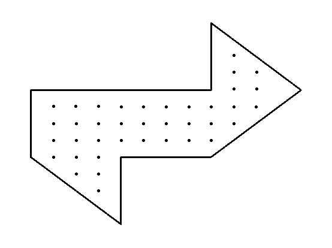

Unfortunately, no.
You may have heard this question before though. It was first posed by mathematician Mark Kac in 1966 and took until 1992 to find an answer for the two-dimensional case. The question formatted in mathematical terms is asking whether the spectrum of the laplacian uniquely determines a boundary in for the Dirichlet problem:
In 1992, Gordon, Webb, and Wolpert constructed the following isospectral regions, answering Kac's question:
Since the sound a drum produces is entirely dependent on its eigenvalues, these two isospectral regions would produce the same noise.
It seems there isn't a whole lot left to work on with this problem then; an infinite family of counterexamples has been found. There is a great opportunity here though to get some practice with numerical methods and come up with some nice visualizations for the drum problem.
In general, finding the explicit spectrum of a region is pretty difficult. This is part of the reason it took nearly 30 years to find this counterexample. In an afternoon we could find nice eigenvalues and eigenfunctions for squares, rectangles, and circles, but if given a non-regular, piece-wise defined mess, it might take us a few decades to work that out too.
Enter numerical approximation. Today, we're going to talk about how we can use the finite difference laplacian to come up with a numerical estimate for the spectrum of a region. Once we've put together all of our code for this, we can test it out on the two regions above to see if we estimate about the same values.
Discretizing our Region
Before worrying about how to discretly approximate the laplacian operator, we need to break our region into a discrete set of points and somehow define the 2D functions
as vectors. To do this, we can just choose any density of a grid that we want and find the points of the grid which lie inside the region using some
sort of in_polygon function. I used
matplotlib.path to get something like this:

We can later increase the resolution of this grid to get better approximations of our spectrum.
The idea from here is to index this grid and use it as a way to vectorize functions defined on the region. Then we can define the discrete Laplacian as a matrix acting on these
vectorized functions and find the eigenvalues of that matrix. There is no correct way to label the points in our region but its easiest to just name them left to right, up to down.
I wrote a function index_array which takes binary numpy arrays and gives all of the ones in the array a unique index. Using the function on a discrete grid, we get
an array that looks like this:
The indexing can go in any order we want. I chose left to right top to bottom for simplicity.
Now all functions in can be described by a unique vector in where is the number of indicies in our grid.
Constructing the Discrete Laplacian
To define an estimate for the Laplacian on this region, we use a finite difference method. In this case, we use the following 5-point scheme:
If we want the value of ,
we can approximate the second derivatives in both variables by getting two estimates of the slope with adjacent points and using those to get an estimate of the second derivative.
This works out to be
where is the distance between adjacent points. Since our function is described by some vector, we can describe this transformation as a matrix
with the diagonal consisting of -4's and minor diagonals with 1's depending on how we indexed the region. These matrices are sparse, so we can use eigsh from
scipy.sparse.linalg to quickly get the eigenvalues and eigenvectors.
An example of a finite difference laplacian
At this point, we are able to approximately compute the spectra of the two regions that were claimed to be isospectral and see that they are nearly identical when we use a high number of points! I encourage you to get the code from the resources and try this yourself.
Initial Conditions and Animations
There is a bit more we can do now too though. Since we also get the eigenvectors of the matrix (really vectorized eigenfunctions) and we know that they form a basis for the space our solutions lie in, we are able to construct explicit solutions when given some initial conditions. To best simulate reality, I assumed and where is some gaussian which represents hitting the drum with some initial velocity at a particular point.
The first few eigenfunctions of a star-shaped drum.
With an explicit solution in time, we can start to make some pretty simulations for any region we want!